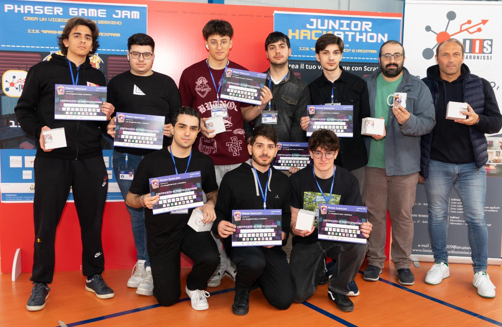

Who am I?
Thomas Giordano è uno studente di Informatica presso l’Università degli Studi di Salerno (UNISA). Ha frequentato l’Istituto d’Istruzione Superiore “Guglielmo Marconi” di Nocera Inferiore, indirizzo Informatica e Telecomunicazioni, diplomandosi con 100/100 e Lode. La sua è una vera passione per il mondo del web, coltivata sia in ambito scolastico sia in contesti aziendali. In particolare, ha avuto modo di ampliare le proprie competenze grazie all’Habeetat School di weBeetle, azienda specializzata nello sviluppo software e nella consulenza informatica. Il suo percorso scolastico si distingue per una forte partecipazione a progetti extra-curriculari come PON pomeridiani, attività di orientamento e competizioni. Tra queste si ricordano la partecipazione ai Training Camp di Olicyber (ed. 2022/2023), Phaser (5° posto, ed. 2022/2023) e Codingirls (1° posto, ed. 2023/2024). L’orientamento rivolto ai più giovani è un’attività che Thomas considera importante e da valorizzare: ha infatti partecipato anche come supporto all’edizione 2025/2026 di Codingirls presso UNISA.

Who am I?
Thomas Giordano è uno studente di Informatica presso l’Università degli Studi di Salerno (UNISA). Ha frequentato l’Istituto d’Istruzione Superiore “Guglielmo Marconi” di Nocera Inferiore, indirizzo Informatica e Telecomunicazioni, diplomandosi con 100/100 e Lode. La sua è una vera passione per il mondo del web, coltivata sia in ambito scolastico sia in contesti aziendali. In particolare, ha avuto modo di ampliare le proprie competenze grazie all’Habeetat School di weBeetle, azienda specializzata nello sviluppo software e nella consulenza informatica.